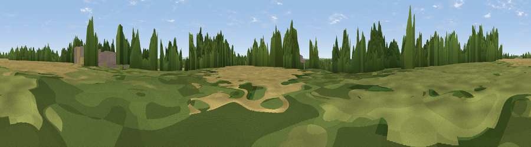

Marston Hill
#39828 in England · top 71% of its area beats it · near Meysey HamptonThe view, rendered

A 360° render of this exact spot computed from the terrain model, tree cover and land cover — summer colours, afternoon light, calibrated against photographs of famous viewpoints. Real trees, hedges and buildings will differ in detail.
The panorama
Grey silhouette: terrain skyline in each direction (720 bearings, Earth curvature and refraction included). Dashed green: skyline with trees (+15 m) and buildings (+8 m) as obstacles. Blue strip: how far the ground is visible on each bearing.
Where the view opens
Wedge length = distance to the farthest visible ground on that bearing (vegetation-aware). Rings at 10, 25 and 50 km.
What fills the view
45% cropland · 30% grassland · 17% woodland · 7% built-up · 1% water
Angular shares of the visible panorama (visual magnitude), not map area. Landscape diversity 0.55 (0–1 Shannon).
Key numbers
More beautiful places nearby
The staircase of upgrades: each row has a higher view potential than everything closer. Driving times are estimates from straight-line distance, calibrated against real road routing — check an actual route before setting out.
| Place | Direction | Drive | Score |
|---|---|---|---|
| Horcott Hill | ENE · 2 km | ~6 min | 36.5 |
| Poulton Hill | WSW · 3 km | ~8 min | 38.7 |
| Common Hill | SW · 8 km | ~16 min | 44.3 |
| Viewpoint near Broad Blunsdon | SSE · 9 km | ~17 min | 53.6 |
| Viewpoint near Coleshill | ESE · 12 km | ~22 min | 54.9 |
| Badbury Hill | ESE · 14 km | ~25 min | 57.4 |
| Folly Hill | ESE · 17 km | ~29 min | 69.5 |
| Charlbury Hill | SSE · 20 km | ~34 min | 70.9 |
51.69404, -1.80862 · source: osm peak · position refined by local search. Computed location — check access rights before visiting.